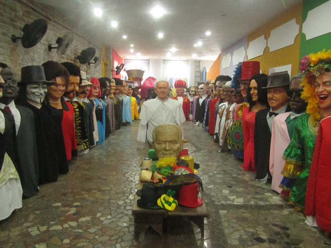

Embaixada dos Bonecos Gigantes
A Embaixada dos Bonecos Gigantes expõe os famosos bonecos criados para participar do Carnaval nas cidades de Recife e Olinda, permitindo que os turistas tenham uma clara ideia da dimensão, da estrutura e do modo de criação dos personagens.
Esta grande espaço surgiu da grande necessidade do turismo de Recife e Olinda de possuir um espaço cultural estruturado a receber turistas e recifenses para contemplar a grande magia da nova geração dos Bonecos Gigantes não só no carnaval, mas sim o ano inteiro.
O espaço abriga a exposição permanente de 63 bonecos gigantes, dentre os 300 existentes desta nova geração que materializa ícones como: Alceu Valença, Michael Jackson, Chacrinha, Ayrton Senna, Chico Science, Domiguinhos, Luíz Gonzaga, Rita Lee, Lampião, Tim Maia, Silvio Santos, Mauricio de Nassau, Papa Francisco, Cartola, Joaquim Barbosa, Lulu Santos, Elvis Presley, Pelé, Neymar entre outros, o espaço é pura magia.
Onde fica?
O espaço localizado na Rua do Bom Jesus 183, Recife Antigo (desde 31 de julho de 2009).